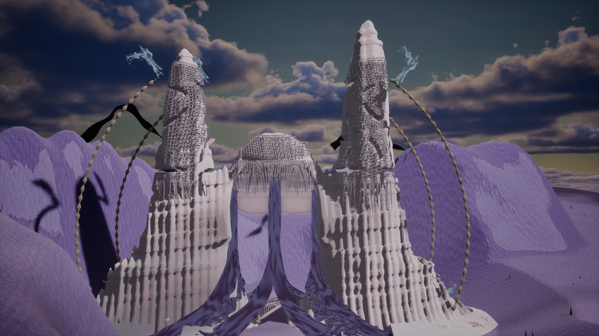
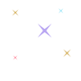
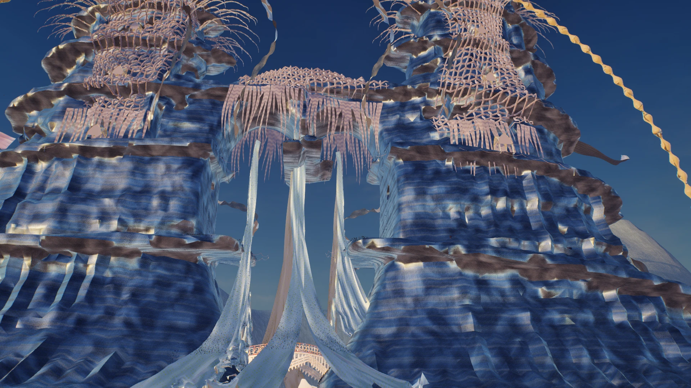
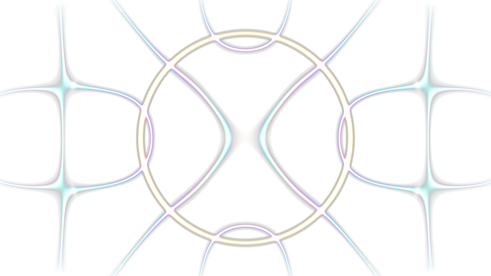
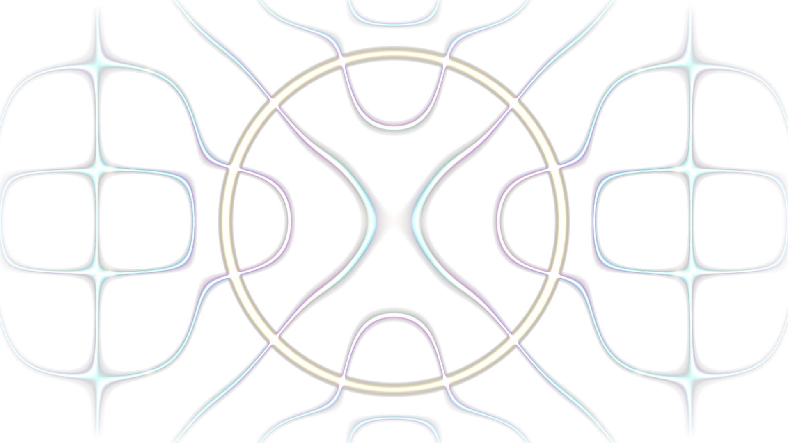

Environment & Technical Artist Toronto
Brennan Shepherd
I build worlds that feel like songs.
Stylized environments, sculpted architecture, and procedural worldbuilding in Unreal Engine and Houdini.
Worldbuilding · Materials · Procedural Art


Portfolio paths
Explore the work.
Start with the environments. Then explore the craft behind them.
Also from the studio: original gouache paintings & drawings
Melodia Melusina · November 2026
Worlds in Resonance.
Three chapters from the current environment look-development collection. Houdini / Karma XPU studies, not final Unreal Engine gameplay captures.


From the studio · November 2026
Light, silk & resonance.
A small selection of environment and procedural look-development studies.

Environment · Unreal EngineApproaching the Heart GateScale, silhouette and landscape rhythm.
16 November · TouchDesignerSakura PearlChladni-inspired light and a soft pastel grade.
16 November · TouchDesignerMoonlit TealA cooler colour study of the same procedural system.